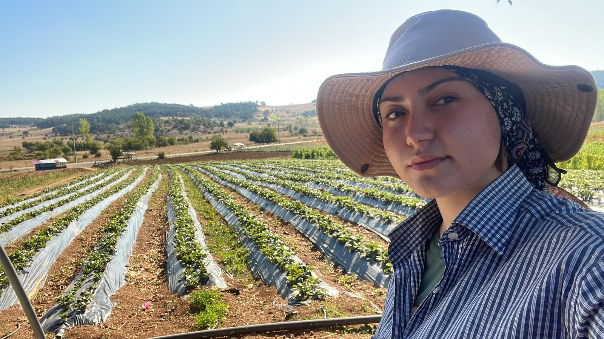
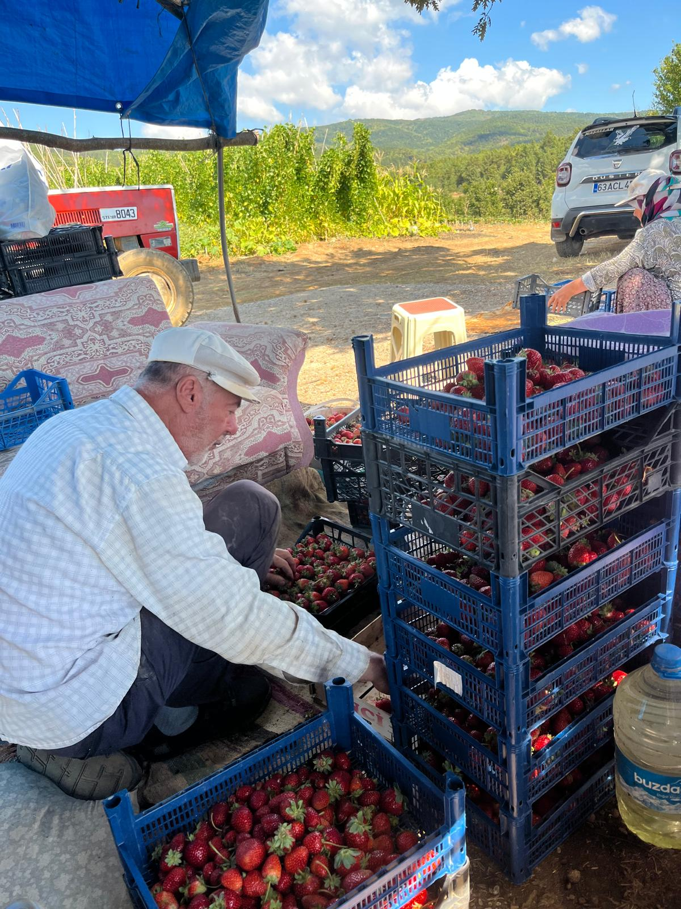
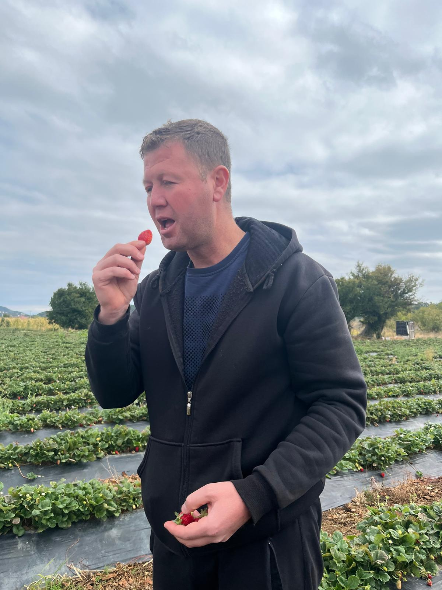

PAMUKOVA ÇİLEK TARLALARI VE YETİŞTİĞİ KÖYLER
← Ana Sayfaya Dön
Çileğin Pamukova'daki Yolculuğu
Pamukova'da çilek üretimi, özellikle bahar aylarında ovanın en canlı dönemini oluşturur.
Buradaki toprakların nem dengesi ve Sakarya Nehri'nin sağladığı alüvyonlu yapı, çileklerin çok daha tatlı, sulu ve aromatik kokulu olmasını sağlar.
Çilek En Çok Hangi Köylerde Yetişir?
Pamukova'nın kırmızı elması sayılan çilek, ağırlıklı olarak şu meşhur köylerimizde üretilmektedir:
- Çilekli Köyü: Adını tam da bu bereketli meyveden alan, yüksek rakımı ve serin havasıyla en kaliteli çileklerin yetiştirildiği merkez köylerimizdendir.
- Hüseyinli Köyü: Geniş arazileri ve geleneksel tarım yöntemleriyle tamamen organik, kokulu çilek üretimiyle bilinir.
- Kemaliye Köyü: Toprağının mineral yapısı sayesinde buradaki çilekler hem çok dayanıklıdır hem de yüksek şeker oranına sahiptir.
- Mekece Köyü: Mikroklimal iklim yapısı sayesinde ovada ilk çilek hasadının başladığı ve en tatlı ürünlerin alındığı köylerdendir.
- Fevziye Köyü: Modern çilek seraları ve tarlalarıyla bilinir; buradaki çilekler doğrudan çevre büyük şehirlere taşınır.
- Ahiler ve Gökgöz Köyleri: Doğal kaynak sularına yakınlığı sayesinde tamamen organik ve yüksek aromalı çilek yetiştiriciliği yapılır.
Çilek Tarlalarımızdan Görüntüler
|

|

|

|
|